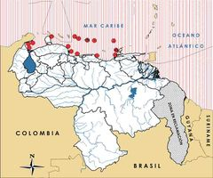

Eretmochelys imbricata
| Carey | |
|---|---|
 | |
| Riesgo de extinción | |
En peligro crítico (UICN) | |
| Clasificación científica | |
| Reino: | Animalia |
| Filo: | Chordata |
| Clase: | Reptilia |
| Orden: | Testudines |
| Familia: | Cheloniidae |
| Género: | Eretmochelys |
| Especie: | Eretmochelys imbricata |
| Nombre binomial | |
|
Eretmochelys imbricata Linnaeus, 1766 | |
| Distribución | |
|
 Mapa de distribución de Eretmochelys imbricata | |
Contenido
Información de Evaluación
- Categoría y Criterio Regional: En Peligro Crítico A2cd
- Fecha de Evaluación Regional: 2015
- Evaluadores: Jesús Morales-Campos y Ariany García-Rawlins
- Categoría y Criterio Global: En Peligro Crítico A2bd
Justificación
Evaluaciones Previas
1999: En Peligro (EN)
2008: En Peligro Crítico (CR)
Información General
Nombres comunes
Tortuga carey, parape, tartaruga de pente, hawksbill turtle, tortue imbriquée.
Notas taxonómicas
Sinónimos
Descripción
En el Atlántico occidental las hembras adultas alcanzan una longitud del caparazón entre 90 y 115 cm, mientras la longitud media en el Caribe oscila entre 83-85 cm (Garduño-Andrade et al. 1999, Moncada Gavilán et al. 1999, Amorocho 2001, Diez y van Dam 2002). Su caparazón es de variados colores, desde el naranja al marrón, incluyendo el negro y el blanco. Los escudos imbricados son notorios en los juveniles. Su cabeza, alargada y angosta, con dos pares de escamas prefrontales, mide unos 12 cm de ancho y el pico córneo es puntiagudo (Pritchard y Trebbau 1984, Buitrago B. 1985). El caparazón posee cuatro pares de escudos laterales o costales. El plastrón es de color amarillo en los adultos y con manchas negras en los juveniles (Pritchard y Trebbau 1984, Buitrago B. 1985). Los adultos pesan hasta 80 kg (Pritchard y Trebbau 1984). La especie consume principalmente esponjas (Porifera), aunque en ciertos sitios los corales (Cnidaria) pueden ser un componente importante en su dieta; también utiliza praderas de fanerógamas marinas e inclusive lagunas con manglares como zonas de alimentación (Meylan 1988, Bjorndal 1997, Leon y Bjorndal 2002, Diez et al. 2003, Jones, T. y Seminoff 2013).
Distribución
La especie hace vida en todos los océanos y mares tropicales. Su hábitat preferido, después de una fase epipelágica, son las zonas coralinas, principalmente paredes arrecifales, donde los juveniles permanecen varios años (Diez y van Dam 2002). Anida en solitario, sobre todo en cayos arenosos y playas continentales aisladas (Buitrago B. 1985). En Venezuela, las áreas de anidación más importantes están en los parques nacionales archipiélago de Los Roques, península de Paria y Morrocoy y en la península de Paraguaná (Medina et al. 1987, Guada y Vernet P. 1988a, Guada y Vernet P. 1988b, Guada y Vernet P. 1992a, Guada y Vernet P. 1992b, Solé y Narciso 1995, Guada et al. 1998, Guada 2000, Guada y Solé 2000, Buitrago B. y Guada 2002, De los Llanos 2002, Gómez, F. et al. 2002, Mata et al. 2002, Barreto-Betancur 2004, Provita 2004, Quijada y Balladares 2004, Gallardo 2007, Guevara C. 2008, Arias O. y Vernet P. 2009, Barreto-Betancur 2009, Klinge A. 2009, Vernet P. et al. 2009, González Rivero 2010, Cisnero 2011, Pulgar H. et al. 2011, Rondón-Médicci 2011, Vernet P. y Arias-Ortiz 2011, Cisnero y Guada 2013, Espinoza Rodríguez et al. 2013, Pérez, A. 2013, Rondón-Médicci 2013a, Balladares y Dubois 2014). Las principales áreas de alimentación están en el golfo de Venezuela, la península de Paraguaná, Morrocoy, Mochima, el golfo de Paria y en todas las islas (Pritchard y Trebbau 1984, Buitrago B. 1985, Buitrago B. 1987b, Medina et al. 1987, Guada y Vernet P. 1988a, Guada y Vernet P. 1988b, Guada y Vernet P. 1992a, Guada y Vernet P. 1992b, Solé y Narciso 1995, Guada 2000, Guada y Solé 2000, Buitrago B. y Guada 2002, De los Llanos 2002, Mata et al. 2002, Parra Montes de Oca 2002, Barreto-Betancur 2004, Montiel-Villalobos y Barrios-Garrido 2008, Arias O. y Vernet P. 2009, Barreto-Betancur 2009, Barrios-Garrido et al. 2009, Klinge A. 2009, Cisnero 2011, Pulgar H. et al. 2011, Rojas, D. et al. 2011, Vernet P. y Arias-Ortiz 2011, González Viloria et al. 2013, Pérez, A. 2013, Rondón-Médicci 2013b, Balladares 2014). Juveniles marcados en Los Roques se han encontrado en nueve países o territorios en el Caribe y en diferentes lugares en el país (Rodríguez-Quintal 1992, Guada y Solé 2000). Una hembra marcada en Bonaire se descubrió en Paraguaná (M. Nava y M. F. González Rivero com. pers.) y una más proveniente de Barbados, fue detectada en Los Testigos y la isla de Margarita (Horrocks et al. 2001).
- Sistema: Terrestre, Marino
- Bioregión:
- Intervalo altitudinal (m): Temporalmente sin información
- Endémica: No
Situación
Las poblaciones remanentes de tortuga carey en el Caribe son solo una pequeña fracción de las existentes en tiempos precolombinos, cuando en su abundancia normal jugaban un papel ecológico clave en los arrecifes (Leon y Bjorndal 2002, McClenachan et al. 2006, McClenachan 2007). En el archipiélago Los Roques y la costa sur de Paria, los conteos evidencian más de un centenar de nidos en cada área y en Paraguaná y Morrocoy se han contabilizado varias decenas de nidos, respectivamente (Guada y Vernet P. 1992b, Buitrago B. y Guada 2002, Cisnero y Guada 2013, Rondón-Médicci 2013a, Balladares y Dubois 2014), lo cual hace inferir que en Venezuela quizás se encuentren entre 300-500 nidos/año. Esta sigue siendo la especie con más presión y de no tomarse medidas urgentes para su conservación, su futuro es incierto (Buitrago B. y Guada 2002, Jones, T. y Seminoff 2013). La captura de la tortuga carey se realiza en todo el país, en sitios críticos como el golfo de Venezuela, Falcón, Paria y todo el sector insular (Pritchard y Trebbau 1984, Buitrago B. 1987b, Medina et al. 1987, Guada y Vernet P. 1988b, Guada y Vernet P. 1992b, Meylan y Donnelly 1999, Guada y Solé 2000, Amorocho 2001, De los Llanos 2002, Parra Montes de Oca 2002, Bräutigam y Eckert 2006, Antczak et al. 2007, Mortimer y Donnelly 2008, Arias O. y Vernet P. 2009, Vernet P. et al. 2009, González Rivero 2010, Cisnero 2011, Pulgar H. et al. 2011, Vernet P. y Arias-Ortiz 2011, Vernet P. et al. 2011, González Viloria et al. 2013, Balladares y Dubois 2014, J. Buitrago obs. pers.). La tortuga carey se clasifica globalmente En Peligro Crítico (CR A2bd) (IUCN 2014), considerando un tiempo generacional conservador para la especie de 35 años en el Caribe y el Atlántico occidental y un análisis realizado en la perspectiva de tres generaciones, que comprende un período de hasta 105 años (Mortimer y Donnelly 2008). En el Caribe algunas poblaciones anidadoras han aumentado, lo cual era factible dada la reducción de su pesquería en Cuba (Mortimer y Donnelly 2008). No se contempla que la situación nacional para este animal haya mejorado o tenga perspectivas de hacerlo, por lo cual se considera que sigue estando en la categoría En Peligro Crítico (CR A2cd) (Buitrago B. y Guada 2008).
- EOO (km2): Temporalmente sin información
- AOO (km2): Temporalmente sin información
- Tendencia Poblacional: Decreciendo
Amenazas
El alto valor de su concha continúa promoviendo las capturas ilegales y el mercado negro; se han reportado precios de hasta mil dólares por un kilogramo de placas. Parte de la oferta ilegal de artículos registrados en las tiendas y por Internet, proviene de carey traído desde Cuba y Colombia. En el país, aparte de bisutería, se elaboran espuelas para gallos de pelea a partir de las placas de carey; su carne no es muy cotizada, pero el saqueo de nidos para utilizar los huevos es común (Pritchard y Trebbau 1984, Medina et al. 1987, Guada y Vernet P. 1988a, Guada y Vernet P. 1988b, Guada y Vernet P. 1992b, Guada 2000, Guada y Solé 2000, Buitrago B. y Guada 2002, De los Llanos 2002, Parra Montes de Oca 2002, Quijada y Balladares 2004, Bräutigam y Eckert 2006, Antczak et al. 2007, Buitrago B. y Guada 2008, Señaris et al. 2008, Arias O. y Vernet P. 2009, Pulgar H. et al. 2011, Rojas, D. et al. 2011, Vernet P. y Arias-Ortiz 2011, González Viloria et al. 2013, Rondón-Médicci 2013b, Balladares y Dubois 2014, J. Buitrago obs. pers.). El 80% de los arrecifes de coral del Caribe están seriamente afectados, lo que constituye una amenaza para los hábitats de esta especie de hábitos alimentarios especializados. No hay evidencias de que la captura incidental en las pesquerías, al eliminar la pesca de arrastre en el país (Venezuela 2008), haya disminuido. Los datos de varamientos indican que más de 60% de las carey reportadas provienen del estado Sucre y su aparición en las estadísticas de varamientos entre 2008 y 2013 varía entre el 8% (n=25) y el 33,33% (n=15) (Pulgar H. et al. 2013, Balladares 2014). El cambio climático, el aumento del nivel del mar y el incremento de tormentas fuertes, son fenómenos naturales especialmente amenazantes para esta especie, ya que el incremento de temperatura afectará la proporción de sexos de las nidadas y el anegamiento de las áreas de anidación puede destruirlas.
Conservación
Existen instrumentos legales nacionales e internacionales que le confieren protección directa o indirecta (Guada y Solé 2000, Buitrago B. y Guada 2002, Babarro 2004, Bräutigam y Eckert 2006, Buitrago B. y Guada 2008, Venezuela 2008). Varios parques nacionales albergan áreas de alimentación y anidación importantes para la especie (Guada y Vernet P. 1992b, Solé y Narciso 1995, Guada et al. 1998, Guada 2000, Guada y Solé 2000, Buitrago B. y Guada 2002, De los Llanos 2002, Mata et al. 2002, Babarro 2004, Quijada y Balladares 2004, Antczak et al. 2007, Buitrago B. et al. 2008, Buitrago B. y Guada 2008, Klinge A. 2009, Vernet P. et al. 2011, Balladares y Dubois 2014). Ser parte de la Convención interamericana para la protección y conservación de las tortugas marinas, ha beneficiado mucho a la tortuga carey en cuanto a acciones emprendidas por las autoridades contra el comercio ilegal. La Oficina Nacional de Diversidad Biológica del Ministerio del Poder Popular para Ecosocialismo y Aguas desarrolla un programa de conservación en el extremo sureste del parque nacional Península de Paria y playas cercanas, el cual ha reducido la pérdida de nidadas (Quijada y Balladares 2004, Balladares y Dubois 2014). Se han realizado diversos esfuerzos de capacitación y también se ha efectuado cría en cautiverio en Los Roques, pero no ha sido evaluado su impacto sobre la población del área protegida (Guada y Solé 2000, Buitrago B. y Guada 2002, Babarro 2004). Numerosas actividades de conservación han tenido lugar desde la publicación de la edición previa del Libro Rojo en 2008, pero no se detallan aquí por limitaciones de espacio. La especie y sus hábitats críticos marino-costeros están incluidos como objetos de conservación a efectos de las operaciones de hidrocarburos costa afuera (Klein 2008). La protección de los hábitats de anidación y alimentación, la erradicación del comercio y la promoción del uso de métodos pesqueros adecuados, son las principales medidas que deben tomarse en favor de la conservación de esta tortuga. Es crucial divulgar el estatus de sus poblaciones a lo largo de la costa y zonas insulares, sobre todo en áreas con presencia indígena como wayúus y waraos. Deberían estimarse los efectos potenciales del cambio climático en las localidades costeras de anidación y alimentación.
Autorías
Autores originales
Joaquín Buitrago (†), Hedelvy J. Guada, María de los Ángeles Rondón-Médicci, Clemente Balladares y Verónica de Los Llanos
Colaboradores
Ilustrador
Amelie Areco
Referencias
- Antczak A, J. Buitrago, M. Mackowiak de Antczak & H.J. Guada. 2007. A Contribution to the History of Marine Turtles Exploitation in Venezuela. 59th Gulf and Caribbean Fisheries Institute: 63-73.
- Arias O., A.O. & P.D. Vernet P. 2009. Evaluación de la situación actual de las poblaciones de tortugas marinas en las zonas de alimentación y anidación en el Archipiélago Los Testigos, Dependencia Federal. Pp:151. En: Giraldo, D., Rojas-Suárez, F. y V. Romero (eds.). Una Mano a la Naturaleza, Conservando las Especies Amenazadas Venezolanas. Provita y Shell Venezuela, S.A. Caracas, Venezuela.
- Babarro, R. 2004. Marco legal relativo a la conservación de las tortugas marinas en Venezuela. Pp:27-45. En: Tortugas Marinas en Venezuela: Acciones para su Conservación. Oficina Nacional de Diversidad Biológica, Dirección de Fauna, Ministerio del Ambiente (MARN). Fondo Editorial FUNDAMBIENTE. 117 pp.
- Balladares, C. (Compilador). 2014. Base de datos de varamientos de tortugas marinas en Venezuela. Oficina Nacional de Diversidad Biológica, Ministerio del Poder Popular para el Ambiente, Venezuela.
- Balladares, C. & E. Dubois. 2013. Saqueo de nidos de tortugas marinas en seis playas del Golfo de Paria de Venezuela. Oficina Nacional de Diversidad Biológica, Ministerio del Poder Popular para el Ambiente, Venezuela. 9 p.
- Barreto B., Y. A. 2009. Identificación de sitios prioritarios para la conservación de ecosistemas marino-costeros de isla La Blanquilla, Dependencia Federal. Pp:46. En: Giraldo, D., Rojas-Suárez, F. y V. Romero (eds.). Una Mano a la Naturaleza, Conservando las Especies Amenazadas Venezolanas. Provita y Shell Venezuela, S.A. Caracas, Venezuela.
- Barreto-Betancur, Y. 2004. Caracterización de las zonas de alimentación y anidación de las tortugas marinas en la costa central de Venezuela, con énfasis en áreas de anidación de Dermochelys coriacea y áreas de alimentación de Eretmochelys imbricata. Iniciativa de Especies Amenazadas – PROVITA. Caracas 58 p.
- Barrios-Garrido, H., N. Espinoza, L. Rivero, L. Bracho-Pérez, R. Torres, B. Conde, B. Morán, K. de Turris, M.F. Puerto & E. Infante. 2009. Registros de varamientos y rehabilitación de tortugas marinas en el Golfo de Venezuela, Estado Zulia, año 2009. Pp:435. En: VIII Congreso Venezolano de Ecología. Libro de Resúmenes.
- Bjorndal, K. A. 1997. Foraging ecology and nutrition of sea turtles, p.199-231. En: The Biology of Sea Turtles (P. L. Lutz y J. A. Musick, editores). CRC Press. Boca Raton. 432 p.
- Bräutigam, A. & K.L. Eckert. 2006. Turning the Tide: Exploitation, Trade and Management of Marine Turtles in the Lesser Antilles, Central America, Colombia and Venezuela. TRAFFIC International, Cambridge, UK.
- Buitrago B., J. 1987. Observaciones sobre la anidación de tortugas marinas en Los Roques (Venezuela) y evaluación de medidas para su protección. An. Inst. Inv. Mar. Punta de Betín 17:137-153.
- Buitrago, J. & H. Guada. 2008. Tortuga carey, pp: 168. J.P. y F. Rojas-Suarez (eds.): Libro Rojo de la Fauna Venezolana. PROVITA y Shell Venezuela, S.A. Tercera edición, Caracas, Venezuela. 67. Gómez, A., C. Lira & C. Romero. 1994. Ruta de comercialización de las tortugas marinas en el Estado Nueva Esparta. Informe de avance del proyecto. 3 p.
- Buitrago, J. & H.J. Guada. 2002. La tortuga carey (Eretmochelys imbricata) en Venezuela. Interciencia 27(8):392-399.
- Buitrago, J., H.J. Guada & E. Doyle. 2008. Conservation science in developing countries: an inside perspective on the struggles in sea turtle research and conservation in Venezuela. Env. Science & Policy 11(6):562-578.
- Buitrago, J., Guada, H. J., Rondón-Médicci, M. A., Balladares, C. y de Los Llanos, V. (2015). Carey, Eretmochelys imbricata. En: J.P. Rodríguez, A. García-Rawlins y F. Rojas-Suárez (eds.) Libro Rojo de la Fauna Venezolana. Cuarta edición. Provita y Fundación Empresas Polar, Caracas, Venezuela. Recuperado de: animalesamenazados.provita.org.ve/content/carey Jue, 12/04/2018 - 11:51
- Cisnero, M.J. 2011. Evaluación de las áreas de anidación de tortugas marinas registradas en el Parque Nacional Morrocoy en la temporada 2010. Tesis de Grado. Departamento de Biología, Facultad de Ciencias y Tecnología (FACYT), Universidad de Carabobo. 85 p.
- Cisnero, M. J. & H.J. Guada. 2013. Seguimiento de la anidación de tortugas marinas en el Parque Nacional Morrocoy, estado Falcón, temporada 2012. Informe Técnico. Centro de investigación y conservación de tortugas marinas. Pp: 636. En: X Congreso Venezolano de Ecología. Libro de Resúmenes. Ediciones IVIC. 204 p.
- De los Llanos, V. 2002. Evaluación de la situación de las poblaciones de tortugas marinas en el Parque Nacional Archipiélago de los Roques. Tesis de Licenciatura. Universidad Central de Venezuela, Caracas, Venezuela.
- Espinoza Rodríguez, N.; P. Vernet, L. Morán, H. Barrios-Garrido & N. Wildermann. 2013. Primer reporte de la actividad de anidación de tortugas marinas en la costa nor-occidental del Golfo de Venezuela. Boletín del Centro de Investigaciones Biológicas, 47(1):86-95.
- Gallardo, A. 2007. Importancia de las playas al este del Estado Vargas para la anidación de las tortugas marinas. Tesis de Licenciatura. Universidad Central de Venezuela. Caracas. 100 p.
- Garduño-Andrade, M., V. Guzmán, E. Miranda, R. Briseño-Dueñas & A. Abreu-Grobois. 1999. Increases in hawksbill turtle (Eretmochelys imbricata) nestings in the Yucatán Peninsula, México, 1977-1996: data in support of successful conservation? Chelonian Conservation and Biology 3(2): 301-307. 2. Amorocho, D.F. 2001. Estado de conservación y distribución de la tortuga carey, Eretmochelys imbricata, en la región del Gran Caribe. Pp:43-427. En: K.L. Eckert y F.A.Abreu-Grobois (eds.). Conservación de las tortugas marinas en la región del Gran Caribe: Un diálogo para el manejo regional efectivo. (Traducción al español de R. Briseño Dueñas y F.A. Abreu Grobois). WIDECAST, UICN/CSE Grupo Especialista en Tortugas Marinas (MTSG), WWF y el Programa Ambiental del Caribe del PNUMA. xx + 170 p. 3. Diez, C.E. & R.P. van Dam. 2002. Habitat effect on hawksbill turtle growth rates on feeding grounds at Mona and Monito Islands, Puerto Rico. Marine Ecology Progress Series: 234:301-309.
- Gómez, F., A. Arteaga, J.D. Alvarez & H.J. Guada. 2002. Results of the 1998 and 1999 Sea Turtle Monitoring Activities in the Laguna De Tacarigua. Pp:248-249. En: A. Mosier, A. Allen Foley y B. Brost (compiladores). Proceedings of the Twentieth Annual Symposium on Sea Turtle Biology and Conservation. U.S. Department of Commerce. NOAA Technical Memorandum. NMFS-SEFSC-477. 369 p.
- González R., M. F. 2010. Actividad de anidación de tortugas marinas en el sector Nor-occidental del Parque Nacional Morrocoy en el estado Falcón. Trabajo Especial de Grado. Escuela de Biología. Universidad Central de Venezuela. Caracas, Venezuela. 119 p.
- González Viloria, G., R. Parra V., K. Urdaneta, S. Galué, D.C. Rojas C. & L. Valero-Barrios. 2013. Pp:637. Conocimiento local sobre tortugas marinas en la comunidad pesquera de Isla de Toas, estado Zulia. Resúmenes. X Congreso Venezolano de Ecología. Ediciones IVIC.
- Guada, H.J. 2000. Áreas de anidación e impactos hacia las tortugas marinas en la península de Paria y recomendaciones de protección. Trabajo de Grado para optar al Título de Magister en Ciencias Biológicas. Universidad Simón Bolívar, Caracas. xix + 228 p. 37. Quijada, A. & C. Balladares. 2004. Conservación de las tortugas marinas en el golfo de Paria. Pp:47-54. En: R. Babarro, A. Sanz & B. Mora (eds.). Tortugas Marinas en Venezuela: Acciones para su Conservación. Dirección de Fauna, Oficina Nacional de Diversidad Biológica, Ministerio del Medio Ambiente y de los Recursos Naturales. Caracas: Fondo Editorial Fundambiente.
- Guada, H.J., V. Vera, E. Yerena, P. Vernet & H. Cuenca. 1998. Monitoring of wildlife in the National Parks of Venezuela: the sea turtles as study case. Pp:65-66. En: Byles, R. e Y. Fernandez (compiladores). Proceedings of the Sixteenth Annual Symposium on Sea Turtle Biology and Conservation. NOAA Tech. Memo. NMFS-SEFSC-412. Miami, Florida, USA.
- Guada, H. J. & P. Vernet P. 1992a. The sea turtle conservation in the Laguna de Tacarigua National Park, Venezuela. Marine Turtle Newsletter 56:7-8.
- Guada, H.J. & P. Vernet. 1992b. Las tortugas marinas en el Parque Nacional Archipiélago Los Roques. Pp:89-107. En: Parque Nacional Archipiélago Los Roques. Serie Parques Nacionales y Conservación Ambiental N° 3. S. Amend & T. Amend (eds.). Caracas: Fundación Polar, Inparques.
- Guada, H.J. & P. Vernet. 1988a. Situación actual de las tortugas marinas en la costa caribeña de Venezuela: Estado Falcón. Informe Técnico. FUDENA, Caracas, Venezuela. 25 p + mapas.
- Guada, H. & P. Vernet. 1988b. Situación actual de las tortugas marinas en la costa caribeña de Venezuela. Estados Anzoátegui y Sucre. Informe. Caracas: Fudena. 24 p. + mapas.
- Guevara C., C. A. 2008. Áreas de anidación y amenazas a las tortugas marinas en las zonas norte y oeste de la península de Macanao. Tesis de Licenciatura. Universidad de Oriente, Núcleo Nueva Esparta. Boca del Río. Estado Nueva Esparta. xv + 132 p.
- Horrocks, J.A., L.A. Vermeer, B. Krueger, M. Coyne, B.A. Schroeder & G.H. Balazs. 2001. Migration routes and destination characteristics of post-nesting hawksbill turtles satellite-tracked from Barbados, West Indies. Chelonian Conservation and Biology 4(1):107-114.
- Klein E. (editor). 2008. Prioridades de PDVSA en la conservación de la biodiversidad en el caribe venezolano. Petróleos de Venezuela, S.A. - Universidad Simón Bolívar - The Nature Conservancy. Caracas, Venezuela. 72 p.
- Klinge A., L. 2009. Caracterización del hábitat de la tortuga carey (Eretmochelys imbricata) en el Parque Nacional Archipiélago Los Roques. M. Sc. Thesis. Texas A&M University. 39 p.
- Leon, Y.M. & K.A. Bjorndal. 2002. Selective feeding in the hawksbill turtle, an important predator in coral reef ecosystems. Marine Ecology Progress Series. 245:249-258. 11. Diez, C., X. Vélez-Zuazo & R. van Dam. 2003. Hawksbill Turtles in Seagrass Beds. Marine Turtle Newsletter 102:8-10. 12. Jones, T. & J. Seminoff. 2013. Feeding biology. Advances from field-based observations, physiological studies, and molecular techniques. Pp: 211-247. En: The Biology of Sea Turtles (J. Wyneken, K.J. Lohmann, J.A. Musick, editores). Volume III. CRC Press. 457 p. 13. Guada, H.J. & G. Solé. 2000. WIDECAST Plan de Acción para la Recuperación de las Tortugas Marinas de Venezuela (A. Suárez, ed.). Informe Técnico del PAC N° 39. Kingston, Jamaica: UNEP Caribbean Environment Programme. xiv + 112 p.
- Mata, T., J. Durán, M. Matani, J. Rodríguez, J.A. Nava, F. Narváez, W. Peña, O. Pizanni, M. Hernández, A. Arteaga & H.J. Guada. 2002. Sea turtle monitoring and management activities in the Archipielago Los Roques National Park: Results of 1998 and 1999. Pp:260-262. En: A. Mosier, A. Allen Foley y B. Brost. (compiladores). Proceedings of the Twentieth Annual Symposium on Sea Turtle Biology and Conservation. U.S. Department of Commerce. NOAA Technical Memorandum. NMFS-SEFSC-477. 369 p.
- McClenachan, L., J.B.C. Jackson & M.J.H. Newman. 2006. Conservation implications of historic sea turtle nesting beach loss. Frontiers in Ecology and the Environment 4(6):290-296.
- McClenachan, L. 2007. Historic decline of green and hawksbill turtle populations in the Caribbean Pp:82. En: Mast R.B., B.J. Hutchinson, A.H. Hutchinson (Compilers). Proceedings of the Twenty-Fourth Annual Symposium on Sea Turtle Biology and Conservation. NOAA Technical Memorandum NMFS-SEFSC-567. 205 pp.
- Medina G., B. Álvarez, J. Buitrago & H. Molero. 1987. Tortugas marinas en la costa caribeña venezolana. Informe preparado para el II Simposio de las Tortugas del Atlántico Occidental (STAO/WATS). 53 p.
- Meylan, A. B. 1988. Spongivory in hawksbill turtles: A diet of glass. Science 239(4838):393
- Meylan, A. & M. Donnelly. 1999. Status justification for listing the hawksbill turtle (Eretmochelys imbricata) as Critically Endangered on the 1996 IUCN Red list of Threatened Animals. Chelonian Conservation and Biology 3(2): 200-224.
- Moncada, F., E. Carrillo, A. Saenz & G. Nodarse. 1999. Reproduction and nesting of the hawksbill turtle, Eretmochelys imbricata, in the Cuban archipelago. Chelonian Conservation and Biology 3(2):257-263. 5. Buitrago, J. 1985. Will the Caribbean hawksbill survive? Sea Frontiers 31(4):219-225.
- Montiel-Villalobos, M.G. & H. Barrios-Garrido. 2008. Geographic distribution of the sea turtles in the Gulf of Venezuela. Pp:141. En: R.B. Mast., B.J. Hutchinson, A.H. Hutchinson (comps.). Proceedings of the Twenty-fourth Annual Symposium on Sea Turtle Biology and Conservation. NOAA Technical Memorandum NOAA NMFS-SEFSC-567. 205 pp.
- Mortimer, J.A & M. Donnelly (IUCN SSC Marine Turtle Specialist Group). 2008. Eretmochelys imbricata. In: IUCN 2013. IUCN Red List of Threatened Species. Version 2013.2. <www.iucnredlist.org>. Downloaded on 06 April 2014.
- Pérez, A. 2013. Evaluación de la situación de las tortugas marinas en la playa de anidación de la localidad de La Sabana, al nor-este del Estado Vargas. Tesis de Licenciatura. Universidad Central de Venezuela. Caracas. 150 p.
- Pritchard, P.C.H. & P. Trebbau. 1984. The Turtles of Venezuela. Contributions to Herpetology, Number 2. Society for the Study of Amphibians and Reptiles. Ann Arbor, Michigan. 468 p.
- Pritchard, P. & J. Mortimer. 2000. Taxonomía, morfología externa e interna de las especies. pp. 23-41. En: Eckert, K.L., K.A. Bjorndal, F.A. Abreu-Grobois y M. Donnelly (eds.). Técnicas de investigación y manejo para la conservación de las tortugas marinas. Grupo Especialista en Tortugas Marinas UICN/CSE.
- Provita. 2004. Programa Procosta. Proyecto Integral de Conservación y Desarrollo (PICD-Costa Barlovento). Pp:91-98. En: Tortugas Marinas en Venezuela: Acciones para su Conservación. Oficina Nacional de Diversidad Biológica, Dirección de Fauna, Ministerio del Ambiente (MARN). Fondo Editorial FUNDAMBIENTE. 117 pp.
- Pulgar H., E., M.F. González Rivero, C. Fischer & H.J. Guada. 2011. Nuevas localidades de anidación de tortugas marinas en el estado Aragua y actividades de conservación realizadas durante la temporada 2010. Pp:294. En: IX Congreso Venezolano de Ecología. Libro de Resúmenes.
- Pulgar H., E., H.J. Guada, C. Fischer & M. Cisnero. 2013. Anidación de tortugas marinas en el estado Aragua y actividades de seguimiento para su conservación durante las temporadas 2011 y 2012. Pp:270. En: X Congreso Venezolano de Ecología. Libro de Resúmenes. Ediciones IVIC.
- Rodríguez, J. P. y Rojas-Suárez, F. (1999). Libro Rojo de la Fauna Venezolana, segunda edición. PROVITA, Fundación Polar. Caracas. 444 pp.
- Rodríguez, J. P. y Rojas-Suárez, F. (Eds.) (2008). Libro Rojo de la Fauna Venezolana, tercera edición. Provita y Shell Venezuela, S. A. Caracas, Venezuela. 364 pp.
- Rojas, D., L. Carruyo, J. Reverol, J. Palmar, N. Espinoza & H. Barrios-Garrido. 2011. Registro preliminar de tortugas marinas sacrificadas en la localidad de Kasusain, Alta Guajira venezolana. Pp:304. En: IX Congreso Venezolano de Ecología. Libro de Resúmenes.
- Rondón-Médicci, M. Registro de las áreas de desove de las tortugas marinas en la Península de Paraguaná, Estado Falcón. Ciencia. 21(3)(Jul-Sep). En prensa.
- Rondón-Médicci, M. 2013. Varamientos y mortalidad de las tortugas marinas en la península de Paraguaná entre los años 2010 y 2013. IV Congreso de Biodiversidad. Punto Fijo, Venezuela.
- Parra Montes de Oca, L. I. 2002. Diagnóstico de la situación actual de las poblaciones de tortugas marinas en la costa occidental del Golfo de Venezuela, Estado Zulia. Tesis de Grado. La Universidad del Zulia, Maracaibo (Venezuela). 154 pp.
- República Bolivariana de Venezuela. 2008. Decreto Nº. 5.930 con Rango, Valor y Fuerza de Ley de Pesca y Acuicultura publicado en Gaceta Oficial de la República Bolivariana de Venezuela Nº 5.877 Extraordinario de fecha 14 de marzo de 2008.
- Rodríguez-Quintal, B. 1992. La Estación de Biología Marina Dos Mosquises y sus proyectos de investigación científica. Pp:69-88. En: Parque Nacional Archipiélago Los Roques (T. Amend, editor). Parques Nacionales y Conservación Ambiental No. 3.
- Rondón M., M. A. 2006. Evaluación del impacto de la luz artificial sobre la anidación de la tortuga cardón (Dermochelys coriacea) en Playa Cipara y percepción y conocimiento de los pobladores costeros sobre las tortugas marinas, en cuatro comunidades, península de Paria, Estado Sucre, Venezuela. Tesis de grado para obtener el título de Magister Scientiae en Manejo y Conservación de Vida Silvestre. ICOMVIS.
- Señaris, J.C., F. Rojas-Runjac & G. Rivas. 2008. Capítulo 4. Anfibios y reptiles. Pp: 127-149. En: Lasso, C. y J.C. Señaris (eds.). Biodiversidad animal del Caño Macareo, Punta Pescador y áreas adyacentes, Delta del Orinoco. Statoil Hydro Venezuela AS – Fundación La Salle de Ciencias Naturales. Caracas, Venezuela.
- Solé, G. & S. Narciso. 1995. Conservación de las poblaciones de tortugas marinas del Refugio de Fauna Silvestre de Cuare y del Parque Nacional Morrocoy. Informe interno de FUDENA.
- UICN. 2001. Categorías y Criterios de la Lista Roja de la UICN: Versión 3.1. Comisión de Supervivencia de Especies de la UICN. UICN, Gland, Suiza y Cambridge, Reino Unido. ii + 33 pp.
- Vernet P., P., A. Quintero, J. Rodríguez & A. Arias-Ortiz. 2009. Conservación de tortugas marinas en nuevas localidades de anidación en la franja costera aledañas Complejo Petroquímico Morón, Estado Carabobo. Pp:394. En: VIII Congreso Venezolano de Ecología. Libro de Resúmenes.
- Vernet P., P., A. Quintero & J. Rodríguez. 2011. Manejo, conservación y seguimiento de las poblaciones de tortugas marinas en la franja costera del Complejo Petroquímico Morón, Estado Carabobo. Pp:553. En: IX Congreso Venezolano de Ecología. Libro de Resúmenes.
- Vernet P., P.; J. Rodríguez, M. Barreat, J. Abdouche & A. Quintero. 2013. Conservación y seguimiento a las poblaciones de tortugas marinas en las costas del estado Carabobo, Venezuela. Pp:634. En: X Congreso Venezolano de Ecología. Libro de Resúmenes. Ediciones IVIC.
- Vernet P., P. & A. Arias-Ortiz. 2011. Las tortugas marinas en la Isla La Tortuga: monitoreo y conservación. Pp:172. En: IX Congreso Venezolano de Ecología. Libro de Resúmenes.